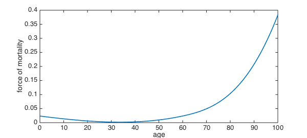
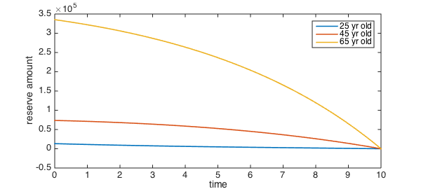
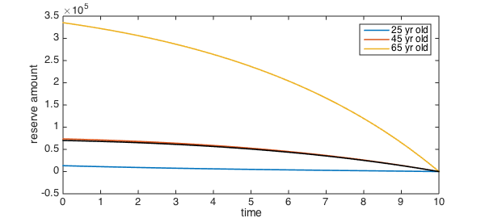

A simple form of life insurance is purchased for a length of time $\tau$ (the term of the policy) and costs the insured party a fixed amount $P$ per year (the premium). If the insured dies during the term of the policy, the insurer must pay a benefit of $S$. Otherwise, the insured receives nothing.
The insurer is required to keep an amount of capital in reserve for this policy, in order to be able to pay out all the claims likely to result from a pooled group of individuals. This is done via the celebrated Thiele differential equation, first derived in 1875 and published in 1910 [1].
Let $V(t)$ for $0\le t \le \tau$ be the amount of the reserve. Obviously, once the policy expires, no reserve is needed; hence, $V(\tau)=0$. Let the force of interest (more widely known as the continuously compounded interest rate) be denoted $\delta$, and let the force of mortality, a measure of the probability of a person dying in a small increment of time, be denoted as a function of age $x$ by $\mu(x)$. If the policy is issued at $t=0$ to an individual of age $A$, then
$$\frac{dV}{dt} = P + \delta V(t) - \mu(A+t) \bigl(S-V(t)\bigr).$$
Force of mortality
According to a study by the U.S. Social Security Administration, the force of mortality (using years as the unit of time) for an individual born in the U.S. in 1969 takes on the values [2]
mu_values = [0.02350 0.00211 0.02376 0.03429 0.04938 0.38292];
at the ages
mu_ages = [0 30 60 65 70 100];
In order to represent $\mu$ as a smooth function of time, we'll use Chebfun's spline command.
mu = chebfun.spline( mu_ages, mu_values );
plot(mu)
xlabel('age'), ylabel('force of mortality')

What is the age of minimum mortality, according to these data?
[~,agemin] = min(mu)
agemin = 33.649597889012959
Calculating the reserve
Let's get ready to issue a life insurance policy. We set a constant interest rate of 3 percent, an annual premium of 800 dollars, and a policy value of a million dollars. The term of the policy is set at 10 years.
delta = 0.03; P = 800; S = 1e6; tau = 10;
Given any starting age $A$, we can define a differential operator that encodes the Thiele equation:
thiele = @(A) @(t,V) diff(V) - (P + 0.03*V - mu(A+t)*(S-V));
Then we can also define a function of $A$ that returns the solution of the equation.
reserve = @(A) (chebop( thiele(A), [0 tau], [], 0 )) \ 0;
Here are the reserve amounts for policies issued to individuals of ages 25, 45, and 65:
plot( [reserve(25),reserve(45),reserve(65)] )
xlabel('time'), ylabel('reserve amount')
legend('25 yr old','45 yr old','65 yr old')

As you would expect, the amount of cash kept on hand is much higher for the older policy holders. Alternatively, the insurer could decide on a maximum amount of cash to keep on hand and charge higher premiums for older customers.
Calculating premiums
Instead of calculating the reserve for a given premium, we might want to invert the calculation. Suppose the maximum cash reserve we wish to allocate is $V_0$. If, as in our previous solutions, the maximum of $V(t)$ occurs at the initial time, then we should add the condition $V(0)=V_0$.
We now have a first-order equation and two boundary conditions. However, we also allow the premium $P$ to be a degree of freedom. Chebfun can solve for the value of a scalar parameter in this situation.
Let's fix $A=45$ this time. When we chose the premium to be 800, we found the reserve to be highest at the initial time and that about 74000 dollars were required. What premium would we need to charge to lower that amount to say, $V_0=70000$ dollars? The BVP we solve for this is
thiele = @(t,V,P) diff(V) - (P + 0.03*V - mu(45+t)*(S-V)); L = chebop( thiele, [0 tau] ); L.lbc = @(V,P) V-70000; L.rbc = @(V,P) V;
The solution for the reserve barely changes...
u = L\0; [V,P] = deal(u); hold on, plot(V,'k')

...yet the premium has increased by 50 percent.
P
P =
1.225699799950009e+03
References:
-
J.P. Gram, "Professor Thiele som aktuar." Dansk Forsikringsarbog (1910), pp. 26-37.
-
Life tables for the United States Social Security, Area 1900-2100, http://www.ssa.gov/OACT/NOTES/as120/LifeTables_Tbl_8.html#wp1004907.